TAGR：面向工业直播广告的时间自适应生成式推荐
《TAGR: Temporally Adaptive Generative Recommendation for Industrial Live-Streaming Advertising》由快手科技 Wencai Ye、Guangyi Liu 等作者完成，合作机构包括清华大学；论文于 2026 年 8 月 25 日公开在 arXiv:2608.24034，当前标注为 under review。本轮未核验到独立官方代码或项目仓库。TAGR 的目标不是只把某个排序器换成生成模型，而是把直播广告中三种不同速度的变化——直播内容与货品、用户意图、策略反馈——分别放进 token、条件表示和偏好优化三个层次处理。
直播广告的内容、货品与用户意图都在不同时间尺度上变化：静态语义 ID 跟不上直播间状态，单尺度行为序列难以同时捕捉瞬时与长期意图，滞后或持续的偏好优化又会在反馈新鲜度与训练稳定性之间失衡。
1. 背景和问题
1.1 直播广告的“物品”并不稳定
普通广告或商品推荐常把 item 当成相对稳定的对象：创意、商品页或内容 ID 在一段时间内可以重复使用，索引和向量缓存也围绕这个稳定实体维护。直播广告不同。同一直播间在几分钟内可能更换讲解场景、主推货品、价格、优惠与库存，用户真正点击进入的对象其实是“此刻的直播场景 × 此刻的货品集合”，而不是永久房间号，也不是单一商品号。若仍用静态 SID，生成器看到的标签就会落后于服务对象；若每次变化都重建完整词表，又会破坏自回归生成所依赖的稳定层级空间。
用户侧也有类似错位。曝光、进房、点赞、加购、下单分别位于不同决策深度，密度和时延差异很大。最近几次进房能反映短时探索，但三十天内的粗粒度浏览更接近稳定偏好；加购和订单稀疏，却比一次短暂进房更能说明商品意图。把所有行为按时间简单拼成一条序列，会让高频弱信号淹没低频强信号，也无法显式告诉解码器应该观察哪个时间尺度。
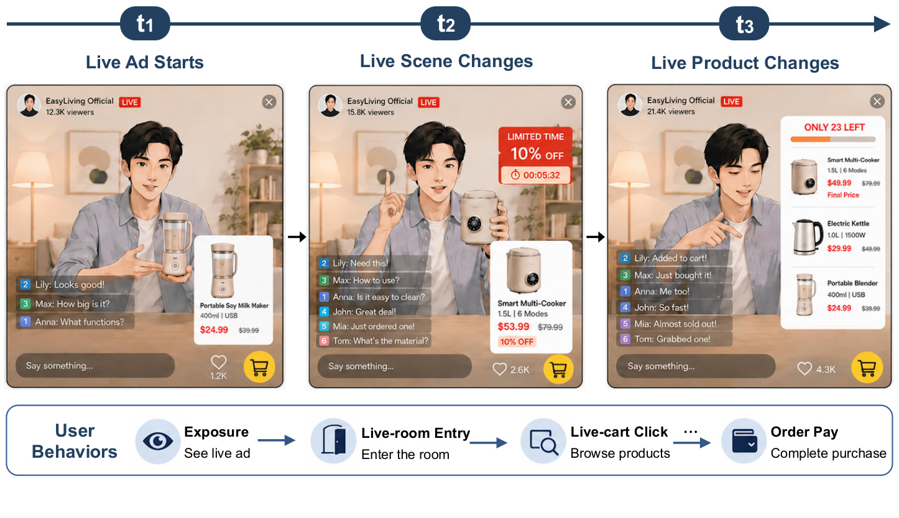
Figure 1 解读。 上半部分不是三个不同直播间，而是同一直播广告从开播、场景变化到货品变化的连续状态：人物、讲解方式、优惠与货架都在变。下半部分则把曝光、进房、加购、支付排成逐步加深的反馈漏斗。图中两个时间轴叠在一起，说明“标签刷新”和“监督可信度”不能共用一个静态假设：场景与货品决定当前应该召回什么，后续行为决定这次展示在多大程度上吻合意图。TAGR 因而需要同时更新目标表示、请求表示与训练信号，而不是只增加一个实时特征。
1.2 三个时间错配为什么不能由一个模块解决
论文把困难拆成三层。第一是 token-side adaptation：直播广告的语义随场景和货品变化，但生成词表必须稳定，才能继续做层级解码和 beam search。这里的矛盾是“assignment 要变、vocabulary 不能频繁变”。第二是 intent-side adaptation：请求时只能使用已经发生的历史，既要捕捉最近几次进房带来的突发意图，又不能丢掉更长周期和行为类型的结构。第三是 alignment-side adaptation：偏好学习若使用旧策略生成的候选，奖励监督会随着策略和流量漂移而过时；若每一步都用当前策略做强化学习，又会让奖励梯度持续扰动 NTP 学到的行为分布。
这三个问题处在不同接口上。token 错配发生在“候选如何命名”，意图错配发生在“请求如何条件化”，偏好错配发生在“策略如何更新”。只做动态 SID 仍可能用错误的用户时间尺度；只做实时序列仍会生成过期标签；只做在线 GRPO 仍会在持续更新中破坏监督模型。因此 TAGR 的真正研究问题是：能否在同一生成式召回链路里，分别为广告、用户和训练策略设计适当的更新频率，同时保持索引一致性和在线吞吐？
1.3 对比边界与证据问题
论文把 DLRM 作为生产判别式多通道召回基线，把 OneRec v2 作为已部署的生成式召回基线。两类系统的离线 HR@K 口径并不相同：生成模型直接解码 Top-K LSID，再映射回活跃广告；DLRM 的候选来自固定 ID 的 ANN/多通道召回，因此论文没有报告可直接横比的 DLRM 离线 HR。线上 A/B 则把候选继续送入相同下游过滤和排序链，报告相对 DLRM 的进房率、加购率与收入提升。这种设计能回答“整条生成召回方案是否有线上价值”，却不能把每个组件解释成独立因果效应；表中各行也都是相对 DLRM，而非相邻行的增量。
从研究价值看，TAGR 的亮点在系统耦合：它给动态语义 ID、实时意图编码与偏好优化一个共同的生产闭环。风险也由此产生——标签刷新、奖励模型、索引更新、训练调度和流量实验彼此依赖，任何一层的时延或偏差都可能改变最终收益。阅读本文时，应该把 +16.1% 收入视为特定快手电商直播广告栈上的整体 A/B 结果，而不是“生成式推荐天然比判别式推荐高 16.1%”。
2. 方法
2.1 三层时间适配与统一生成链路
对请求时间 $t$，系统观察用户上下文 $C_u(t)$ 与活跃直播广告集合 $\mathcal{A}(t)$。广告 $a$ 由场景 $S_a(t)$ 和货品集合 $P_a(t)$ 联合定义，服务目标是生成 Top-$K_{\mathrm{serve}}$ 的层级 LSID。TAGR 按顺序完成三件事：LSID 把当前场景与货品映射为时间相关标签 $y_a(t)$；IAG 把多尺度行为和分类型行为编码为请求表示 $M_u(t)$；IOPO 在监督 NTP 基础上间歇地使用当前策略候选做偏好更新。关键不是让所有模块都“越实时越好”，而是让标签、用户表示和策略各自按适合的节奏刷新。
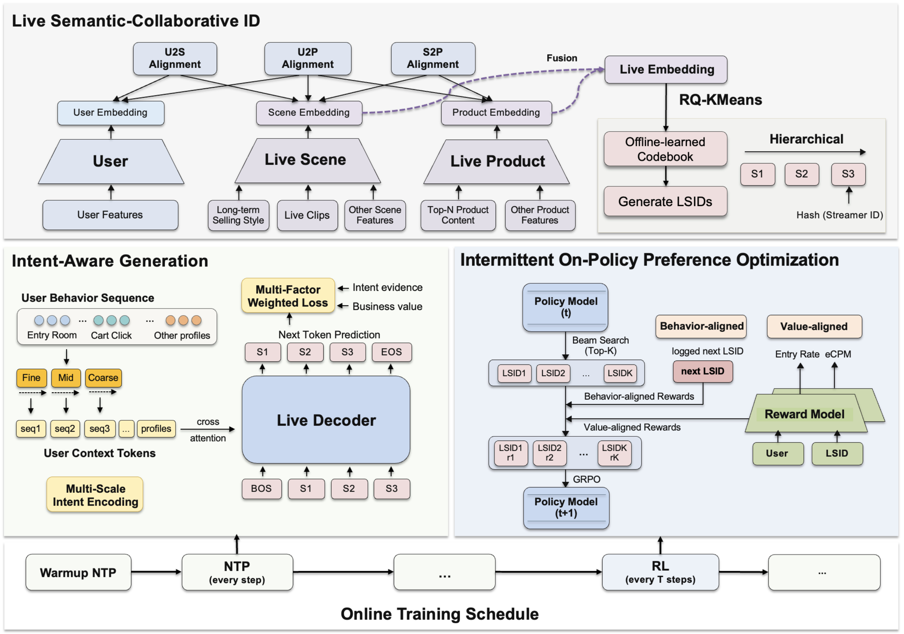
Figure 2 解读。 顶部 LSID 模块先用 U2S、U2P、S2P 三种对齐塑造共享空间，再把场景与货品融合后送入 RQ-KMeans，生成 S1、S2、S3 等层级 token；用户只参与空间学习，不参与请求级 token assignment。左下 IAG 将进房序列分成 fine、mid、coarse 三种尺度，并保留加购等行为和 profile 的独立通道，随后由 Live Decoder 做下一个 token 预测。右下 IOPO 从当前 Policy Model beam search 出候选，分别接受 behavior-aligned 和 value-aligned 奖励。最下方时间线显示先 warmup，再每步做 NTP、每隔 $T$ 步插入一次 RL；这条调度线是连接三块结构的核心，而非普通训练示意。
2.2 LSID：让动态直播广告映射到稳定词表
LSID 首先分别编码直播场景、货品和用户。场景输入包括主播长期带货风格、实时直播片段和其他实时场景特征；货品输入包括标题、caption、属性、实时订单状态与其他货品特征；用户输入包括全局兴趣和 profile。三个 ReLU MLP 投影到同一空间：
符号解释： $\mathbf{s}$、$\mathbf{p}$、$\mathbf{u}$ 分别是场景、货品和用户表示；带 $t$ 的量会随直播状态变化，长期风格与 profile 提供较慢的先验。分开编码避免把货品文本、实时订单和用户协同信号过早压进一个不可解释向量。空间随后通过用户到场景、用户到货品、场景到货品三项对比损失联合塑造，再用场景和货品形成真正参与 assignment 的直播广告向量：
符号解释： U2S/U2P 以进房和加购等协同反馈塑造几何结构，S2P 保留场景与货品共现；$\alpha$、$\beta$ 是融合权重，论文选择 $[0.8,0.2]$。用户表示并没有进入第二个式子的 assignment，因此同一直播广告在同一时刻有规范、与请求无关的 LSID；协同信息通过训练后的 codebook geometry 间接进入。这一点避免了“每个用户一套索引”的服务灾难。RQ-KMeans 接着将 $\mathbf{z}_{\mathrm{live}}(t)$ 量化为层级序列，最后一级再加入 streamer-aware hash bucket 降低碰撞：
符号解释： $D$ 是层级深度，$s_\ell$ 是第 $\ell$ 层 token，$\mathcal{V}_\ell$ 是该层稳定词表。广告的 assignment 可每 1-5 分钟重算，而词表不随每次直播变化重建；服务侧只需把新 assignment 写入 LSID 存储和双向 LSID-LiveID 索引。这会把模型新鲜度问题转化为索引一致性问题：若标签、训练样本与在线映射更新不同步，生成正确 token 也可能解析到错误或过期广告。
2.3 IAG：多尺度意图编码与多因子监督
符号解释： 生成器对层级 LSID 做自回归分解，$M_u(t)$ 是请求时已经可见的用户上下文，$s_{<\ell}$ 是此前生成的 token 前缀。推理不依赖请求后的点击或支付；那些未来结果只在训练时决定样本应该有多大权重。MSI-Encoding 把最近 $L=300$ 次进房按 $\mathcal{S}=\{1,2,10\}$ 的 stride 构造成细、中、粗三套 token。对 stride $s$ 的第 $j$ 个块：
符号解释： $W_s$ 把连续 $s$ 个 entry 动作投影为一个尺度 token，$\mathbf{p}^{(s)}_j$ 注入位置信息；点赞、加购、订单不混入 entry 序列，而是分别编码。这样 decoder 可以按请求选择短期进房、局部探索、较长趋势或稀疏深行为，而不是把行为类型差异交给一个位置编码隐式猜测。MF-NTP 再解决“某个 logged target 有多可信”，把意图证据与商业优先级乘成样本权重：
符号解释： $w_{\mathrm{feedback}}$ 按曝光后行为深度衡量 target 对真实意图的证据强弱，$w_{\mathrm{user}}$ 表示长期广告价值分层，$w_{\mathrm{eCPM}}$ 是分位数归一化后的商业价值；$\gamma_\ell$ 控制不同 token 层的损失，所选值为 $[1.0,0.8,0.6]$。权重会归一化并裁剪到上限 5，避免极端 eCPM 样本主宰梯度。这里不能把 $w_{\mathrm{feedback}}$ 理解成校准后的转化概率，它只是训练监督可信度。
2.4 IOPO：间歇式当前策略偏好优化与部署闭环
传统离策略做法由旧模型维护候选池，当前策略更新后，候选分布与奖励监督逐渐错位；多个版本还要各自维护 sample server。IOPO 改为当前策略每隔 $T$ 步生成一组候选，短暂执行 GRPO，其他步骤继续 NTP。Figure 3 左侧的同步、推断服务器和两套 sample flow 被右侧统一 flow 取代，但奖励模型仍和策略同时从流式反馈更新。
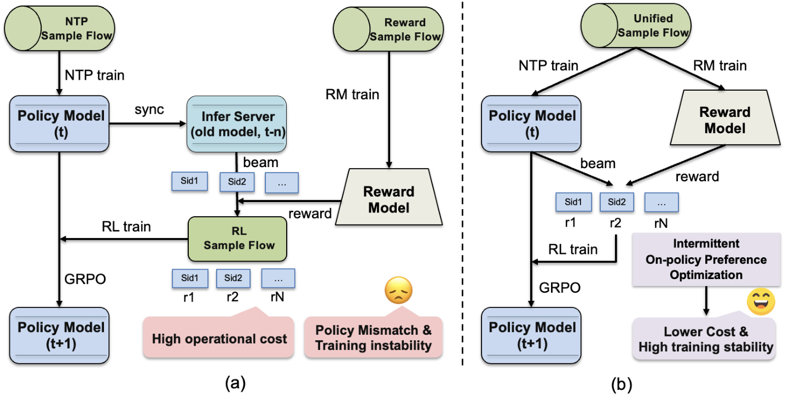
Figure 3 解读。 左图中 Policy Model 先同步到旧 Infer Server，候选进入独立 RL Sample Flow，再由 Reward Model 打分；当策略已从 $t$ 走到 $t+1$，样本仍可能来自 $t-n$，并产生额外池管理成本。右图由当前 Policy Model 直接 beam search，一套统一样本流同时服务 NTP 与 RM，随后用当前候选做间歇 GRPO。图示支持的是“减少候选滞后和运维路径”，并不自动证明 reward model 没有滞后；RM 仍依赖流式标签、打分稳定性和更新频率。BA-GRPO 随后用生成 LSID 与下一次真实交互 LSID 的 token-space 相似度做行为锚点：
符号解释： $E_\ell$ 是第 $\ell$ 层 token embedding，$s^*$ 是监督 NTP 同一 labeling pipeline 下的下一次真实交互，$G=20$ 是当前策略候选组大小；$\mu_{\mathrm{ba}}$、$\sigma_{\mathrm{ba}}$ 在同一请求组内计算，advantage 裁剪到 $[-2.5,2.5]$。复用 $w(x)$ 意味着更可靠、更高价值的样本在行为对齐中也更重要。VA-GRPO 则进一步用 RM 预测曝光后的进房响应和归一化 eCPM：
符号解释： $\mathbf c_k$ 是候选的 eCPM 上下文，$\beta_{\mathrm{va}}=0.2$ 限制商业分量，$\lambda_{\mathrm{ba}}=0.1$、$\lambda_{\mathrm{va}}=1.0$ 平衡两种偏好；$\mathbb I_{\mathrm{RL}}$ 只在计划中的 RL step 为 1，所选间隔 $T=200$。因此“间歇”不是降低学习率，而是在目标函数层面关闭大多数 step 的 GRPO，只保留监督维护。
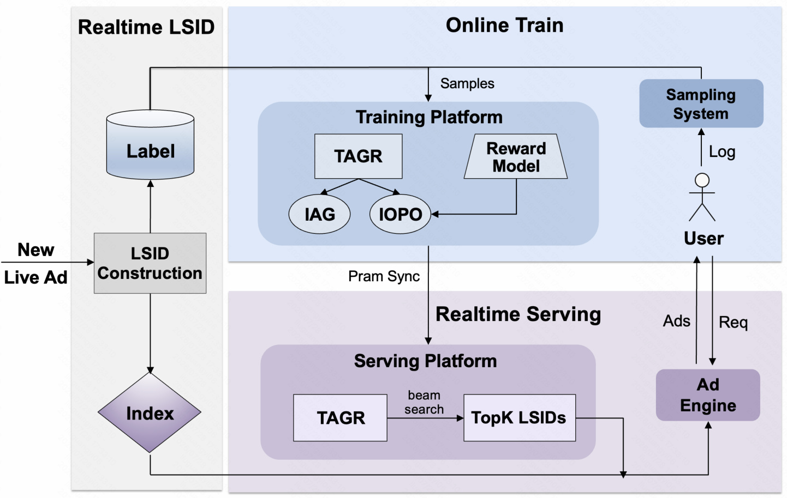
Figure 4 解读。 左侧 Realtime LSID 接收 New Live Ad，生成 Label 与 Index；顶部 Online Train 从用户日志采样，训练 TAGR 的 IAG/IOPO 和 Reward Model；下方 Realtime Serving 接收广告请求，经 TAGR beam search 生成 Top-K LSID，再交给广告引擎。参数从训练平台同步到服务平台，曝光与行为日志返回采样系统，构成闭环。论文报告活跃广告每分钟重编码、索引数秒内传播，beam width 为 256；优化解码与缓存达到单张 L20 GPU 超过 2500 QPS、端到端召回延迟低于 100 ms。图里没有展示灰度回滚、索引双写一致性或延迟尾分位，这些仍是复现生产方案时必须补的运维层。
3. 实验结果
3.1 数据、指标与整体结果
离线数据来自真实电商直播广告平台：5 天训练、随后 2 天验证、再随后 2 天测试，以时间顺序评估内容漂移下的前向泛化；请求历史取最近 30 天。数据覆盖超过 4 亿用户和数十万直播广告，标签包含进房 LRE、加购 SCC 与购买等漏斗行为。离线指标是 LRE/SCC 的 HR@64、HR@128，生成出的 LSID 要先解析到活跃广告，再与真实 target 匹配。离线 DLRM 与生成 Top-K 的候选空间不同，所以空白不是“DLRM 为零”。
时间切分还有一个容易忽略的细节：MF-NTP 使用请求后的反馈给样本加权，LSID 构造也会读取场景、货品与订单状态，因此这些信息必须限制在各自数据切片中。作者明确声称训练、验证、测试都遵守对应切片，以避免把测试期的深行为或货品变化提前泄漏给训练。但论文没有公开样本构造代码，无法独立检查“请求发生时可见特征”和“请求后才到达标签”的事件时间一致性。对于复现者，至少要保存 event time、processing time 和 LSID version，并用它们重建每个 target；只按日志落盘日期切表仍可能把迟到反馈或未来 assignment 混入历史。
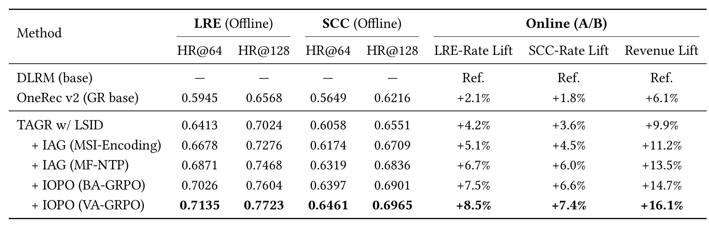
Table 1 解读。 OneRec v2 的 LRE HR@128 为 0.6568、SCC HR@128 为 0.6216，线上相对 DLRM 分别提升 2.1%、1.8% 和 6.1% 收入。加入 LSID 后对应为 0.7024、0.6551 和 9.9% 收入提升；MSI、MF-NTP、BA-GRPO、VA-GRPO 逐行把完整 TAGR 推到 LRE HR@128=0.7723、SCC HR@128=0.6965，以及 LRE rate +8.5%、SCC rate +7.4%、收入 +16.1%。这些行共享数据预算和下游链路，但数值均相对 DLRM，不能把 9.9%、11.2%、13.5%、14.7%、16.1% 相加，也不能把收入增幅全部归因于 VA-GRPO。
线上实验是 10% 生产流量上的多周随机试验，覆盖超过 4000 万用户，以实现广告收入为主指标。分群中，低价值用户收入提升 28.8%，冷启动直播间提升 18.4%。这些结果说明收益不只来自头部成熟库存，但论文未给出确切周数、实验日期、置信区间、显著性检验、流量桶分配细节和安全 guardrail，因此不能判断波动范围，也不能排除特定促销周期的影响。
3.2 Token 与意图侧消融
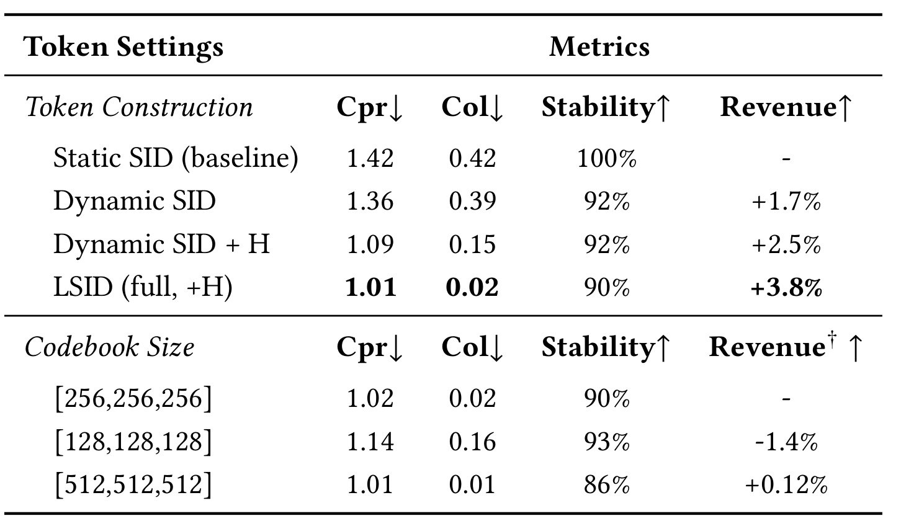
Table 2 解读。 Cpr 是“直播广告数 / 不同 LSID 数”，理想值为 1；Col 是一个 LSID 对应多个 item 的比例；Stability 是一次直播内一级 token 不变的广告比例。Static SID 虽有 100% stability，但 Cpr=1.42、Col=0.42。只做 Dynamic SID 把 Cpr/Col 降到 1.36/0.39并带来 +1.7% 收入；增加主播 hash 后为 1.09/0.15 和 +2.5%；完整 LSID 为 1.01/0.02、90% stability 和 +3.8%。codebook 从 256 缩到 128 会使 Cpr/Col 恶化到 1.14/0.16并带来 -1.4% 收入；扩大到 512 只多 +0.12% 收入却降低稳定性并增加解码成本。它支持默认 256 是工程折中，而非越大越好。
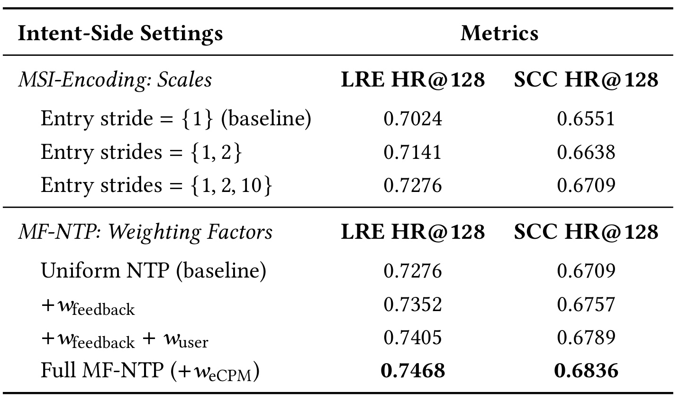
Table 3 解读。 MSI 部分从 stride $\{1\}$ 的 LRE/SCC HR@128=0.7024/0.6551，加入 stride 2 后升到 0.7141/0.6638，再加入 stride 10 到 0.7276/0.6709，说明较粗历史提供了与短期进房互补的信息。MF-NTP 部分从 uniform NTP 的 0.7276/0.6709 出发，依次加入反馈深度、用户价值和 eCPM，最终为 0.7468/0.6836。这个递增顺序说明每项在作者设置中提供额外信号，但没有报告反向加入顺序或全组合析因，因此仍可能存在顺序依赖与交互效应，不能把三项贡献当作严格可加。
3.3 IOPO 的新鲜度、稳定性与奖励分解
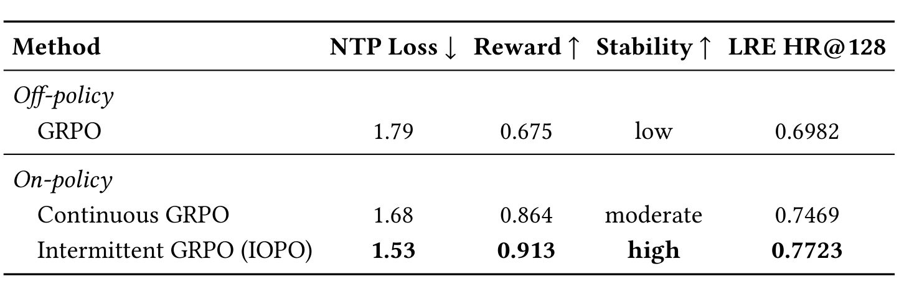
Table 4 解读。 使用旧策略候选的 off-policy GRPO 得到 NTP loss 1.79、reward 0.675、低稳定性和 LRE HR@128=0.6982。换成当前策略但连续更新后，loss 降到 1.68、reward 升到 0.864，稳定性仍只是 moderate。间歇 IOPO 进一步达到 1.53、0.913、high 和 0.7723。论文把 stability 定义为没有出现“高于 running mean 0.1”的 loss spike 的训练窗口比例，这是操作性指标而非通用收敛证明；不过四个读数方向一致，支持候选新鲜度和更新频率是两个不同因素。
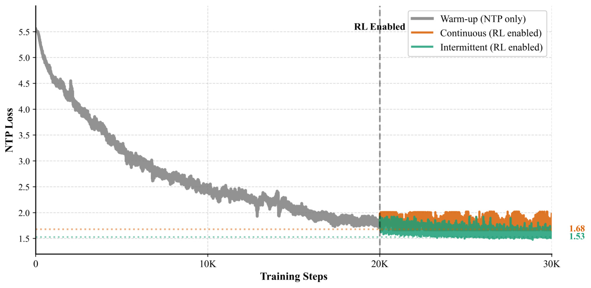
Figure 5 解读。 0-20K step 是相同 NTP warmup，loss 从约 5.5 下降到约 1.7；虚线后启用 RL。橙色连续更新在 1.5-2.0 之间频繁振荡，终点约 1.68；绿色间歇更新振幅明显更小并收敛到约 1.53。图中没有画 off-policy 曲线，作者解释其不稳定会遮挡当前策略比较，最终读数放在 Table 4。曲线能说明持续奖励梯度会干扰监督目标，却没有多随机种子区间；“仅为连续更新三分之一训练成本”的说法也缺少 GPU 小时和系统端到端成本表。
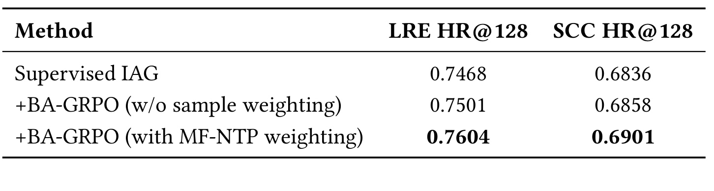
Table 5 解读。 监督 IAG 的 LRE/SCC HR@128 为 0.7468/0.6836；加入不带样本权重的 BA-GRPO 后为 0.7501/0.6858，提升较小；复用 MF-NTP 的 $w(x)$ 后达到 0.7604/0.6901。这个结果符合方法直觉：token-space 相似度只说明候选靠近下一次交互，而反馈深度和商业权重决定这条交互证据是否值得强监督。但实验没有给出仅用 $w(x)$ 而不做 BA-GRPO 的同一阶段对照，因而不能完全分离“行为奖励”和“权重重用”的交互。
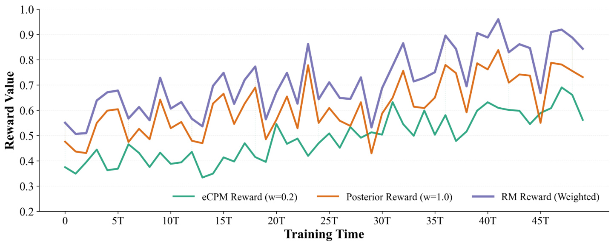
Figure 6 解读。 绿色 eCPM reward、橙色 post-exposure reward 与紫色加权 RM reward 随 50 个训练周期整体上升，但单步波动明显，紫色并非单调曲线。$\beta_{\mathrm{va}}=0.2$ 让 post-exposure 响应保持主导，商业分量提供方向修正；这比只追 eCPM 更不容易牺牲相关性。需要克制的是，纵轴是 RM reward 而非直接线上收入，eCPM 标签还来自生产精排分数。三条曲线证明优化在其代理目标上推进，不能单独证明因果收入增益或 reward calibration。
附录的受控 backbone 比较在同一当前策略候选和同一价值模型下给出 DPO、S-DPO、GRPO：reward 分别为 0.834、0.871、0.913，LRE HR@128 分别为 0.7486、0.7594、0.7723。组内使用更多候选的 GRPO 最好，但这里只比较一个生产数据域与一套 group size；并不能推出 GRPO 在所有推荐偏好优化中优于 DPO。
3.4 覆盖分布与工业可用性
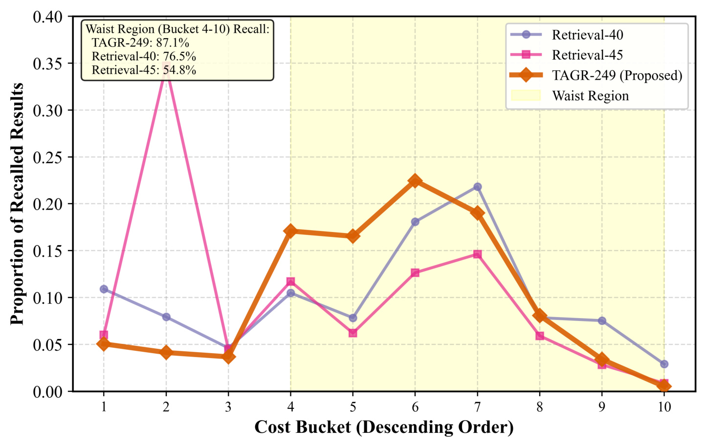
Figure 7 解读。 横轴把主播按累计广告消耗从高到低分成 10 桶，黄色 4-10 桶是 waist region；纵轴是各召回通道结果在桶上的比例。TAGR-249 在 4-10 桶分配 87.1% 召回量，高于 Retrieval-40 的 76.5% 和 Retrieval-45 的 54.8%，尤其在第 4-6 桶更突出；Retrieval-45 则在第 2 桶高度集中。该分布与冷启动、低价值用户分群收益方向一致，说明动态 LSID 可能扩大非头部库存可见性。不过“更多腰部”不是自动的质量提升：图中未给各桶曝光、转化与收入置信度，也未报告广告主公平或用户体验 guardrail。
部署数字补充了可用性证据：Lazy Decoder 为 6 层、hidden size 512、4 个 attention heads，batch size 为每 GPU 512；直播广告 1-5 分钟刷新，beam width 256，论文声称单张 L20 超过 2500 QPS、召回延迟低于 100 ms。它说明 TAGR 不是只在离线样本上模拟，但缺少 P50/P95/P99、显存、模型大小、索引容量、刷新失败率和成本相对 DLRM 的明细，因此“工业可行”仍主要由单平台部署事实支撑。
还要区分“生成通道覆盖更广”和“整条广告链路最终展示更广”。Figure 7 统计的是召回通道产出的直播广告分布，候选之后仍会经过过滤、精排、拍卖和频控；腰部候选即使进入 Top-$K_{\mathrm{serve}}$，也未必获得曝光。要证明生态层面的多样性改善，应同时报告召回、精排入围、曝光、进房、加购和收入在各消耗桶的逐层留存，并观察头部广告的损失是否由新增腰部价值补偿。当前论文把覆盖变化与线上收益称为“方向一致”，这个措辞是合理的相关性判断，但证据不足以锁定唯一机制。
4. 总结
4.1 我的判断与可迁移价值
TAGR 最值得借鉴的是把“实时性”拆成三个控制面：目标标签刷新、请求表示刷新、策略更新刷新。推荐系统中，新商品、短视频热点、广告创意和搜索意图同样可能让 item 语义变动；可以借鉴“assignment 动、词表稳”的 LSID 思路，把索引变更限制在可追踪映射层。MSI 与 MF-NTP 则提醒我们，序列长度不是唯一时间建模手段，行为类型、反馈深度和商业优先级应在表示与监督两处明确分工。IOPO 对大模型 Agent/RAG 也有启发：当工具轨迹或检索候选由旧策略收集时，偏好信号会 stale；间歇插入当前策略更新，并用监督任务维持行为先验，可能比持续 RL 更容易控制灾难性遗忘。
这种迁移不能照搬收入权重。直播广告的 eCPM、进房、加购都受平台拍卖和下游精排影响，换到内容推荐或 Agent 时，需要重新定义行为锚点和价值信号。更一般的模式是：让一个低偏差的行为目标负责“不偏离可接受分布”，让一个任务价值目标负责“朝更高效用移动”，再用更新日程约束两者冲突。
4.2 局限与风险
- 外部可复现性有限。 论文没有核验到公开代码，数据、线上流量、RM 标签与广告系统均为内部资产；under review 状态也意味着版本可能继续变化。
- A/B 统计信息不足。 只给出多周、10% 流量和超过 4000 万用户，没有确切日期、周数、置信区间、显著性、随机化单元、SRM 检查与 guardrail，难以判断收益稳定性。
- 奖励代理可能形成闭环偏差。 VA-GRPO 的 eCPM 来自生产精排分数，RM 与生成器共享底层 LSID embedding；虽然 scoring 使用 stop-gradient，代理标签仍可能放大既有精排偏好，而不等价于真实增量收入。
- 索引一致性与回滚未展开。 LSID 每分钟重算并在数秒内传播，论文没有描述双写、版本号、迟到更新、直播结束、碰撞冲突和模型/索引不匹配的回滚策略。
- 泛化场景单一。 离线与线上证据都来自一家平台的电商直播广告；用户漏斗、广告拍卖、内容寿命与其他推荐域差异很大，不能直接外推到普通短视频、搜索或国际市场。
- 覆盖增益未等于长期生态收益。 腰部召回占比提高是方向性证据，但没有同时给出广告主留存、用户负反馈、头部损失或长期多样性，分布变化是否可持续仍未验证。
4.3 后续跟进
- 优先追踪评审版与代码。 核对后续版本是否补充精确 A/B 周期、显著性、guardrail、索引一致性与训练成本；若开放实现，再验证 RQ-KMeans 刷新逻辑。
- 复现实验先做小规模动态标签模拟。 构造随时间变动的 scene-product target，分别测 assignment refresh lag、collision、stability、index mismatch 和 HR，而不是只复现静态推荐准确率。
- 补全 IOPO 的频率扫描。 论文附录只给所选 $T=200$ 与搜索集合，应比较 $T=100/200/500$ 在 reward、NTP loss、wall-clock、样本新鲜度和回滚风险上的完整曲线。
- 做奖励闭环审计。 将真实后验收入、精排 eCPM 与 RM 输出分开校准，检查各用户价值层、冷启动直播间和消耗桶上的误差，避免代理模型把现有商业偏差带回生成策略。
- 与更轻的实时召回基线比较。 除 DLRM 与 OneRec v2 外，应加入动态 ANN、增量双塔、滑窗兴趣与仅重排更新方案，在相同 P95 延迟、GPU 成本和索引更新预算下判断生成式链路的净收益。
总体而言，TAGR 给出了一个结构完整、线上证据较强的工业生成式召回案例。它最可靠的结论是：在快手电商直播广告环境中，把 token、意图和偏好按不同频率适配，与离线召回、线上行为和收入的共同改善相关；它尚未证明相同架构在其他平台必然有效，也没有消除动态索引和奖励代理带来的工程风险。